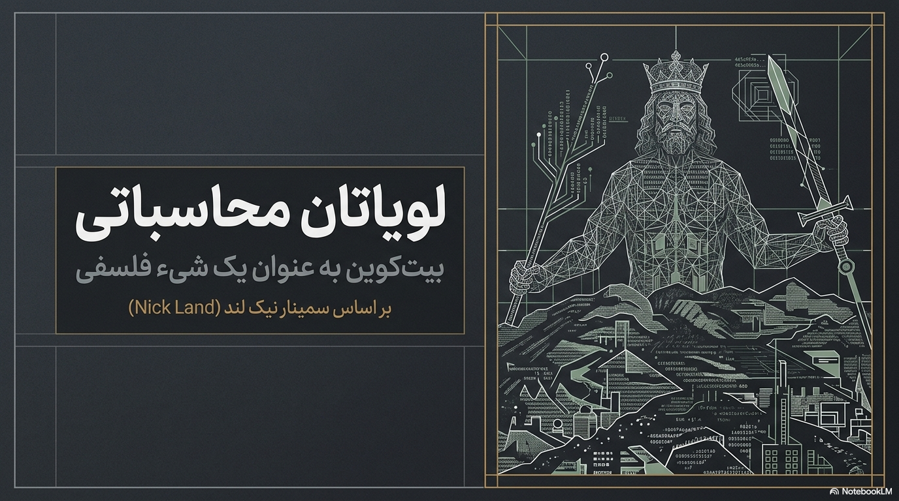
در پاییز ۲۰۰۸، سندی نُهصفحهای با امضای شخصی به نام ساتوشی ناکاموتو در یک فهرست پستی رمزنگاری منتشر شد. سند ادعای بزرگی نداشت؛ فقط یک راهحل فنی برای مسئلهای قدیمی ارائه میداد: چگونه میتوان بدون واسطهای مورد اعتماد، از دوبار خرجشدن یک واحد ارزش دیجیتال جلوگیری کرد؟ اما آنچه از دل این راهحل بیرون آمد، چیزی فراتر از یک پروتکل پرداخت بود؛ نوعی بازتعریف رابطهٔ انسان با زمان، حقیقت، مالکیت و حاکمیت.
نیک لند، فیلسوفی که در دههٔ ۱۹۹۰ با نوشتارهای شتابگرایانهاش دربارهٔ سرمایه، فناوری و آخرالزمان شناخته شد، در سمینار هشتجلسهای «بیتکوین و فلسفه» به سراغ همین سند رفت؛ نه برای شرح اقتصادی آن، بلکه برای خواندنش در کنار هابز، کانت، تورینگ، هایدگر و دلوز و گتاری. پرسش لند این بود: اگر بیتکوین را نه یک دارایی مالی، بلکه یک رخداد فلسفی بدانیم — رخدادی که در آن پروتکل جای قانون را میگیرد، زمان ماشین جای زمان انسانی را، و اجماع محاسباتی جای مرجعیت انسانی را — آنگاه چه چیزی دربارهٔ آیندهٔ عاملیت انسانی آشکار میشود؟
این کتاب تلاشی است برای بازسازی آن مسیر فکری به زبان فارسی: از متن اصلی ناکاموتو و ریشههای نظری آن نزد نیک ابو، عبور از سه سنگبنای فلسفهٔ غرب دربارهٔ قدرت، ادراک و محاسبهپذیری (هابز، کانت، تورینگ)، تا رسیدن به دو خوانش قرن بیستمی از هستی و میل (هایدگر، دلوز و گتاری) که لند برای ساختن دستگاه مفهومی خود از آنها وام میگیرد. بخش پایانی کتاب، گزارشی تحلیلی از هر یک از هشت جلسهٔ سخنرانی لند است، همراه با پخش مستقیم خودِ ویدیوها. برای شنیدن نسخهٔ فشرده و صوتی این مسیر نیز پادکستی در انتهای کتاب گنجانده شده است.
متنهایی که در ادامه میآیند، حاصل تلفیق چند ترجمهٔ موازی و بازبینی سبکی هستند تا با وجود تفاوت دوره و نویسنده، در سراسر کتاب یک صدای واحد و روان را دنبال کنند. برای اصطلاحات فنی و فلسفی، با نگهداشتن نشانگر ماوس روی واژهٔ هایلایتشده، معادل انگلیسی و تعریف کوتاه آن نمایان میشود.
نویسنده: ساتوشی ناکاموتو — ۳۱ اکتبر ۲۰۰۸
نسخهای کاملاً همتابههمتا از پول الکترونیکی امکان میدهد پرداختهای آنلاین مستقیماً از یک طرف به طرف دیگر ارسال شوند، بدون عبور از یک نهاد مالی. امضای دیجیتال بخشی از راهحل را فراهم میکند، اما اگر برای جلوگیری از دوبار خرجکردن هنوز به یک طرف سوم قابلاعتماد نیاز باشد، اصل مزیت این سیستم از دست میرود. راهحل پیشنهادی، استفاده از شبکهای همتابههمتا است که با تبدیل تراکنشها به زنجیرهای پیوسته از اثبات کار مبتنی بر هش، سابقهای میسازد که بدون تکرار آن کار قابل تغییر نیست. طولانیترین زنجیره، هم شاهد توالی رویدادهاست و هم اثبات اینکه از بزرگترین منبع قدرت پردازشی سرچشمه گرفته. تا وقتی اکثریت قدرت پردازشی در اختیار گرههای صادق باشد، این زنجیره از هر زنجیرهٔ رقیب پیشی میگیرد.
تجارت اینترنتی تقریباً بهطور کامل به نهادهای مالی بهعنوان واسطههای قابلاعتماد وابسته است؛ نظامی که هرچند برای اغلب تراکنشها کارآمد است، از ضعف بنیادین مدل مبتنی بر اعتماد رنج میبرد. برگشتپذیری، نیاز به میانجیگری در اختلافات را ایجاد میکند، هزینهٔ تراکنش را بالا میبرد، و امکان معاملات کوچک و آنی را از بین میبرد. آنچه لازم است، نظامی مبتنی بر اثبات رمزنگارانه بهجای اعتماد است که به دو طرف مایل اجازه دهد بدون واسطه، مستقیماً معامله کنند. راهحل پیشنهادی این مقاله، سرور زمانبندی توزیعشدهٔ همتابههمتا است که اثبات محاسباتی از توالی زمانی تراکنشها میسازد.
یک سکهٔ الکترونیکی را میتوان زنجیرهای از امضاهای دیجیتال تعریف کرد: هر مالک، با امضای هشِ تراکنش پیشین و کلید عمومی مالک بعدی، سکه را منتقل میکند. مشکل اینجاست که گیرندهٔ پول نمیتواند مطمئن شود مالک پیشین همان سکه را جای دیگری خرج نکرده. راهحل رایج، مرجعی مرکزی (ضرابخانه) است که هر تراکنش را برای دوبارخرجی بررسی کند — اما در این صورت، سرنوشت کل نظام پولی به همان مرجع مرکزی گره میخورد. راهحل بدیل این است که تراکنشها علناً اعلام شوند و شرکتکنندگان بر سر ترتیب دریافتشان به توافق برسند.
سرور زمانبندی با گرفتن هش از بلوکی از داده و انتشار گستردهٔ آن هش عمل میکند؛ هر زمانبندی، هشِ زمانبندی پیشین را در خود جای میدهد و زنجیرهای میسازد که هر حلقهٔ تازه، حلقههای پیشین را تحکیم میکند.
برای پیادهسازی این سرور بهصورت توزیعشده، از سازوکاری شبیه Hashcash آدام بک استفاده میشود: جستوجو برای مقداری که هشِ آن با تعدادی بیت صفر آغاز شود. اثبات کار در واقع به شکل «یکپردازنده-یکرأی» عمل میکند، برخلاف مدل «یکآیپی-یکرأی» که بهراحتی با تخصیص انبوه آیپی قابل دستکاری است. برای تغییر یک بلوک گذشته، مهاجم باید اثبات کار همان بلوک و تمام بلوکهای پس از آن را از نو انجام دهد و سپس بر گرههای صادق پیشی بگیرد — احتمالی که با هر بلوک تازه بهصورت نمایی کاهش مییابد.
گرهها تراکنشهای تازه را جمع میکنند، روی اثبات کار بلوک خود تلاش میکنند، و بلوک پذیرفتهشده را با کار روی بلوک بعدی تصدیق میکنند. همواره طولانیترین زنجیره، زنجیرهٔ معتبر شناخته میشود. اولین تراکنش هر بلوک، پاداشی است که سکهٔ تازه به سازندهٔ بلوک میدهد — انگیزهای برای پشتیبانی از شبکه که بهمرور میتواند جای خود را به کارمزد تراکنش بدهد.
با استفاده از درخت مرکل، تراکنشهای قدیمیتر را میتوان بدون شکستن هشِ بلوک از حافظه حذف کرد. کاربران میتوانند بدون اجرای یک گرهٔ کامل، تنها با نگهداشتن سرآیندهای بلوک، پرداختها را با روش تأیید سادهشده بررسی کنند. حریم خصوصی نه با پنهانکردن تراکنشها، بلکه با ناشناس نگهداشتن کلیدهای عمومی حفظ میشود؛ شبیه سازوکار بورس که حجم و زمان معاملات را عمومی میکند بیآنکه طرفین را افشا کند.
احتمال موفقیت مهاجمی که بخواهد زنجیرهای بدیل بسازد، همچون مسئلهٔ کلاسیک «ورشکستگی قمارباز» با فاصله گرفتن هر بلوک بیشتر، بهصورت نمایی کاهش مییابد. نظامی برای تراکنشهای الکترونیکی بدون تکیه به اعتماد پیشنهاد شد: شبکهای همتابههمتا که با اثبات کار، تاریخچهٔ عمومی تراکنشها را چنان میسازد که تا وقتی گرههای صادق اکثریت قدرت پردازشی را در دست دارند، از نظر محاسباتی برای مهاجم غیرعملی میشود آن را دستکاری کند.
متن اصلی: Bitcoin: A Peer-to-Peer Electronic Cash System — bitcoin.org/bitcoin.pdf
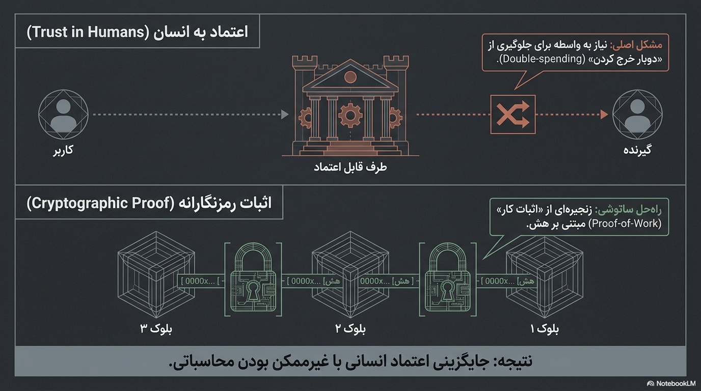
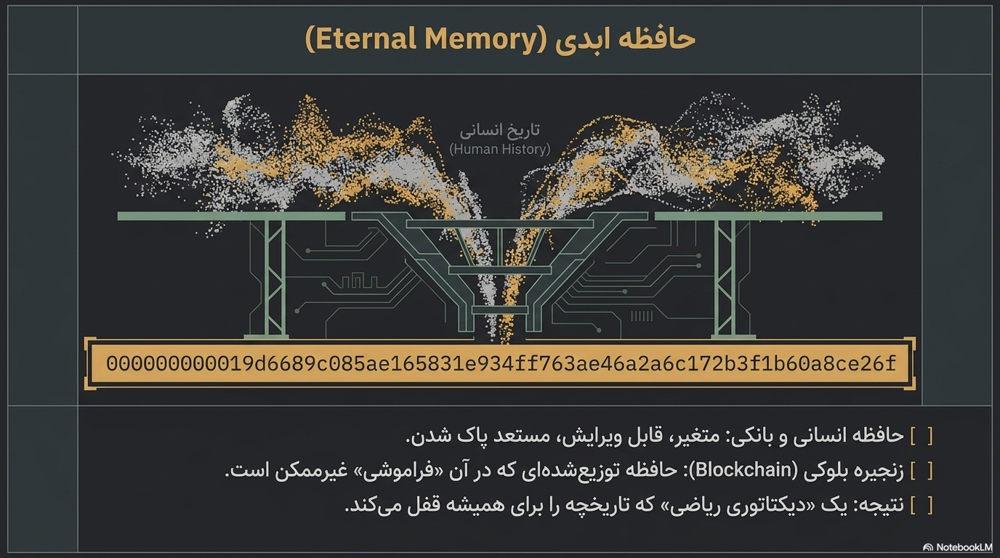
سند ناکاموتو، در ظاهر، تنها یک راهحل مهندسی برای یک مسئلهٔ رمزنگارانه است. اما همینجا، در همین چند صفحه، بذر پرسشهای فلسفیای کاشته میشود که فصلهای بعدی این کتاب یکییکی آنها را میگشایند: اگر اعتماد را بتوان با اثبات ریاضی جایگزین کرد، آنگاه برای فهم این جابهجایی باید به سراغ کهنترین پرسش فلسفهٔ سیاسی رفت — پرسشی که توماس هابز سه قرن و نیم پیش از آن به بهترین شکل صورتبندی کرد: اساساً چرا انسانها به یک قدرت مشترک نیاز دارند؟
بر پایهٔ مقالهٔ «Shelling Out: The Origins of Money» — نیک ابو (۲۰۰۲)
پیش از آنکه به سراغ خودِ بیتکوین برویم، لازم است بپرسیم پول اساساً چه چیزی است و از کجا میآید. پاسخ رایج اقتصاددانان کلاسیک، روایتی ساده و آشناست: زمانی انسانها کالا را مستقیم با کالا مبادله میکردند، این کار دشوار بود، و پول بهعنوان راهحلی میانجی برای تسهیل این مبادله اختراع شد. نیک ابو، در مقالهای که سالها پیش از ظهور بیتکوین نوشت، دقیقاً همین اسطورهٔ مبادلهٔ کالا به کالا را هدف میگیرد و آن را نه یک واقعیت تاریخی، بلکه یک فرضیهٔ راحت و بیمدرک میداند.
به گفتهٔ ابو، جوامع پیشاتاریخی بهندرت با پایاپای مستقیم دو کالا معامله میکردند، چرا که این کار مستلزم چیزی است که او آن را هزینهٔ کیفیتسنجی مینامد: پیش از هر معامله، هر دو طرف باید زمان و انرژی زیادی صرف کنند تا ارزش واقعی کالای طرف مقابل را بسنجند و همزمان کسی را بیابند که دقیقاً به همان چیزی نیاز دارد که او عرضه میکند. آنچه واقعاً در این جوامع رایج بود، اشیای «قابلجمعآوری» بود — از صدف گرفته تا مهرههای فلزی و پرها — که ارزششان نه در مصرف مستقیم، بلکه در تواناییشان برای حمل و ذخیرهٔ اعتبار اجتماعی در طول زمان نهفته بود. این اشیا معمولاً هیچ کاربرد عملی نداشتند، اما دقیقاً همین بیکاربردی، آنها را از دستکاری و تقلید مصون نگه میداشت و کمیابیشان را تضمین میکرد.
از اینجا، ابو نتیجه میگیرد که کارکرد بنیادین پول، «کالا بودن» نیست، بلکه واحد حساب بودن است: سازوکاری برای ثبت و انتقال تعهدات متقابل میان افرادی که لزوماً یکدیگر را نمیشناسند یا به هم اعتماد ندارند. پول، در این خوانش، از ابتدا یک فناوری حافظه و حسابداری اجتماعی بوده است، نه یک کالای مصرفی.
این بازخوانی خاستگاه پول، پلی مستقیم به مسئلهٔ فصل پیشین میزند. دقیقاً همان مسئلهای که نزد جوامع پیشاتاریخی بهصورت صدف و مهرهٔ کمیاب حل شده بود — چگونه بتوان تعهدات متقابل را بدون اعتماد شخصی ثبت کرد — چند دهه بعد، بیتکوین با تبدیل «سجل تعهدات متقابل» به یک نشانگر محاسباتی کمیاب و بدون نیاز به اعتماد متقابل، از نو حل میکند: کمیابی رمزنگارانهٔ حاصل از اثبات کار، همان نقشی را ایفا میکند که کمیابی فیزیکی صدف و فلز در گذشته ایفا میکرد. اما اگر خاستگاه پول را حل کردیم، هنوز باید بپرسیم: چگونه میتوان تعهدات را نهفقط ثبت، بلکه بهطور خودکار و بدون دخالت انسانی اجرا کرد؟ این دقیقاً پرسشی است که نیک ابو در نوشتار دیگرش، دربارهٔ قراردادهای هوشمند، پاسخ میدهد.
منبع: Shelling Out: The Origins of Money — nakamotoinstitute.org
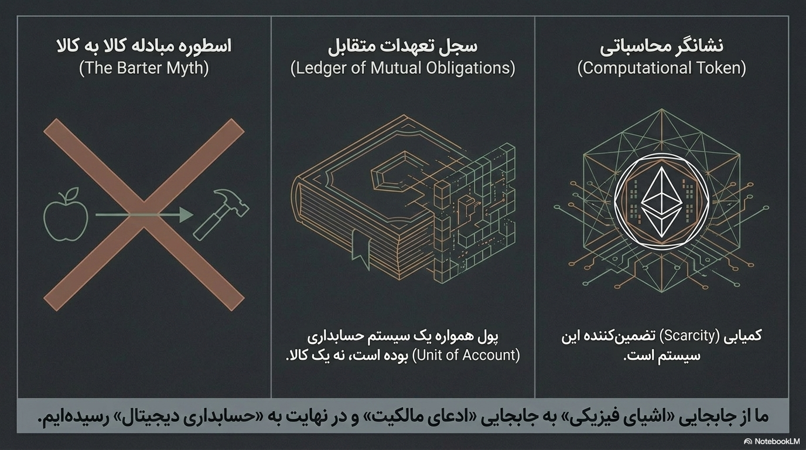
بر پایهٔ مقالهٔ «Smart Contracts: Building Blocks for Digital Markets» — نیک ابو (۱۹۹۶)
اگر پول، سازوکاری برای ثبت تعهدات باشد، پرسش بعدی روشن است: چگونه میتوان تضمین کرد این تعهدات، بدون دخالت مکرر یک واسطهٔ انسانی، واقعاً اجرا شوند؟ نیک ابو، در نوشتاری که سالها پیش از فناوری بلاکچین منتشر شد، مفهوم قرارداد هوشمند را دقیقاً برای پاسخ به همین پرسش صورتبندی کرد: قراردادی که شروطش نه در کاغذ، بلکه در کد نوشته شده و بهصورت خودکار اجرا میشود.
نمونهٔ آشنایی که خودِ ابو برای توضیح این ایده بهکار میبرد، ماشین فروش خودکار است: دستگاهی که بدون هیچ فروشندهای، شرط «اگر سکه وارد شود، آنگاه کالا خارج شود» را بیکموکاست اجرا میکند. ابو این ایدهٔ بهظاهر ساده را به بستری برای بازتعریف کل بازارهای مالی و حقوقی گسترش میدهد: از قراردادهای مشتقه گرفته تا نظامهای امانی، همه را میتوان بهشکل مجموعهای از شروط اجراپذیر توسط کد بازنویسی کرد.
مزیت مرکزی این رویکرد، آنچه او حذف واسطه مینامد، است: کاهش شدید هزینههای تراکنشی که معمولاً صرف اعتمادسازی، وثیقهگذاری و پیگیری حقوقی میشود. اما نکتهٔ عمیقتر اینجاست که اعتماد در این مدل، دیگر به یک «وعده» بسته نیست، بلکه به یک «دستورالعمل اجرایی» تبدیل میشود — تفاوتی که در نگاه اول فنی بهنظر میرسد، اما پیامدهای فلسفی گستردهای دارد.
همین تفاوت است که زمینهساز ظهور سازمانهای خودگردان (DAOs) میشود و در نهایت، همان دستگاه مفهومیای است که نیک لند آن را «پروتکل در برابر قانون» مینامد: اگر قانون همواره نیازمند تفسیر انسانی و اجرای بیرونی است، پروتکل بهخودیخود اجرا میشود. با این سه متن فنی پشت سر — سند ناکاموتو، خاستگاه پول، و قراردادهای هوشمند — اکنون بستر لازم برای پرسیدن پرسش فلسفی بنیادینتری فراهم شده: اگر تعهد، اعتماد و اجرا همگی از حوزهٔ انسانی به حوزهٔ محاسباتی منتقل شوند، چه بر سر خودِ مفهوم قدرت و حاکمیت میآید؟ برای پاسخ به این پرسش، باید به سرچشمهٔ فلسفهٔ سیاسی مدرن بازگردیم: به توماس هابز.
منبع: Smart Contracts: Building Blocks for Digital Markets — nakamotoinstitute.org
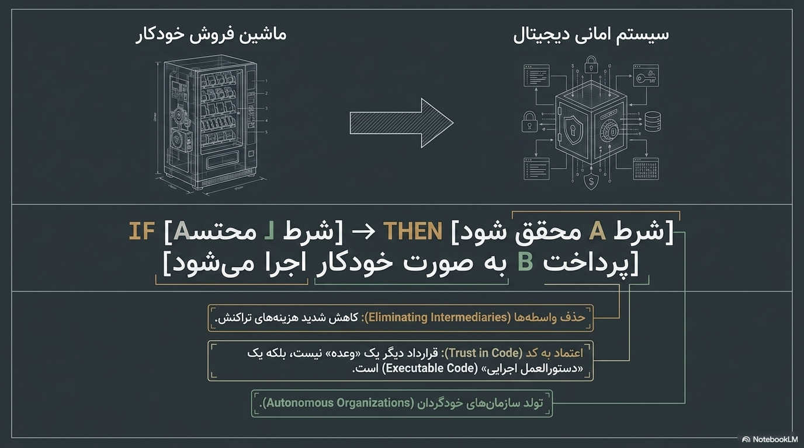
توماس هابز — ۱۶۵۱ — فصلهای ۱۳، ۱۴ و ۱۷
سه متن فنی پیشین، همگی حول یک محور میچرخیدند: چگونه میتوان اعتماد، تعهد و اجرا را بدون واسطهٔ انسانی سامان داد. اما برای فهم عمق این جابهجایی، باید نخست بدانیم واسطهٔ انسانی — یعنی همان قدرت حاکم — از کجا آمده و چرا اساساً به آن نیاز داشتیم. توماس هابز، در «لویاتان»، دقیقترین پاسخ کلاسیک به این پرسش را بهدست میدهد.
هابز از این نکته آغاز میکند که طبیعت انسانها را از نظر تواناییهای بدنی و ذهنی چندان نابرابر نساخته که یکی بتواند مدعی امتیازی شود که دیگری از آن محروم است. از همین برابری تقریبی، برابری امید در رسیدن به هدفها برمیخیزد؛ و وقتی دو نفر خواهان چیزی یکسان باشند که هر دو نتوانند از آن بهره ببرند، دشمن یکدیگر میشوند. او سه ریشهٔ اصلی نزاع را برمیشمارد: رقابت بر سر منفعت، بیاعتمادی که امنیت میطلبد، و افتخار که شهرت میجوید. نتیجه، وضعیت طبیعیای است که هابز آن را «جنگ همه علیه همه» مینامد — نه صرفاً نبرد واقعی، بلکه تمایل شناختهشده و مستمر به آن، تا زمانی که هیچ ضمانتی برخلاف آن وجود نداشته باشد. در چنین وضعیتی نه صنعتی هست، نه کشاورزی، نه دریانوردی، نه معماری، نه هنر، نه جامعه؛ و زندگی انسان، به تعبیر تلخ او، «تنها، فقیر، تنفرآمیز، خشن و کوتاه» است.
حق طبیعی، آزادی هر انسان برای استفاده از قدرت خویش در راه حفظ زندگی خود است. اما قانون طبیعی، قاعدهای است که عقل آن را کشف میکند: انسان نباید کاری کند که زندگی خودش را نابود سازد. از اینجا قانون نخست طبیعت زاده میشود — تلاش برای صلح تا زمانی که امیدی به آن هست — و قانون دوم: هر انسان باید، به شرط آنکه دیگران نیز چنین کنند، از حق مطلق خود بر همهچیز دست بکشد و به همان اندازه آزادی راضی باشد که مایل است دیگران در برابرش داشته باشند.
غایت نهایی انسانها در نهادن این محدودیتها بر خویش، چیزی نیست جز پیشبینی حفظ خود و زندگی رضایتبخشتر — یعنی بیرونآمدن از آن وضعیت اسفناک جنگ که پیامد ضروری هوس طبیعی بشر است، وقتی هیچ قدرت مشترکی در کار نباشد. تنها راه برپایی چنین قدرتی، این است که همه، قدرت و قوت خود را به یک انسان یا مجمعی از انسانها بسپارند تا ارادههای پراکنده را با قاعدهٔ اکثریت به یک اراده تقلیل دهند. این کار با میثاقی صورت میگیرد که هر انسان با هر انسان دیگر میبندد. از این پیمان، آن «لویاتان بزرگ» زاده میشود — همان خدای فانیای که صلح و امنیتمان را زیر سایهٔ خدای جاودان، مدیون او هستیم.
نکتهای که هابز بر آن تأکید دارد، اما اغلب نادیده گرفته میشود، این است: قدرت لویاتان از یک ماهیت متافیزیکی یا الهی برنمیخیزد، بلکه صرفاً از تجمیع ارادهٔ افراد و تهدید به مجازات ناشی میشود — یعنی از ترس. دقیقاً همین نکته، پل مفهومی لند به سمت بیتکوین است: اگر لویاتان هابزی صرفاً یک سازوکار برای حل مسئلهٔ اعتماد جمعی از طریق ترس از مجازات بود، آنگاه شاید بتوان همان مسئله را با سازوکاری غیرانسانی و غیرترسناک نیز حل کرد — سازوکاری که در آن، بهجای دولت حاکم و ترس از زندان، الگوریتم و غیرممکنبودن محاسباتیِ تقلب، نقش ضامن نظم را ایفا کند. این دقیقاً همان ایدهای است که فصل بعدی، از دریچهٔ نقد عقل محض کانت، از زاویهای دیگر به آن نزدیک میشود: اگر نظم اجتماعی هابزی به یک قرارداد نیاز داشت، نظم شناختی کانتی به چه قالبهای پیشینی نیاز دارد؟
متن اصلی: Leviathan, Thomas Hobbes (1651) — gutenberg.org/ebooks/3207
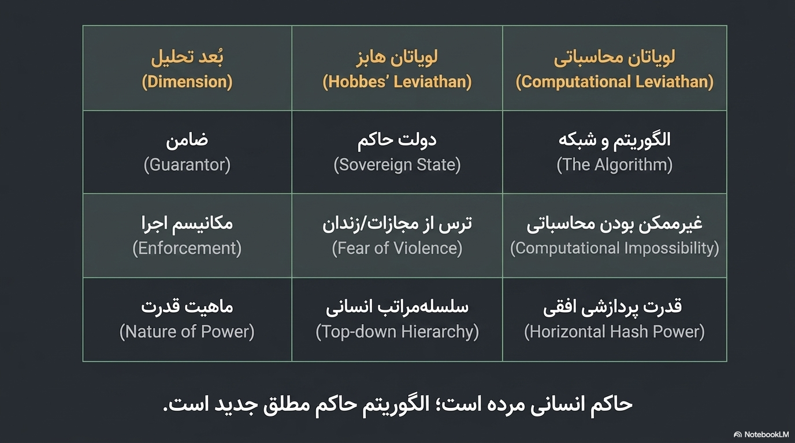
ایمانوئل کانت — ۱۷۸۱ — زیباییشناسی متعالی
اگر هابز نشان داد که نظم اجتماعی به یک قرارداد بنیادین نیاز دارد، کانت یک قدم عقبتر میرود و میپرسد: پیش از هر قراردادی، ذهن انسان چگونه اساساً قادر است جهان را بهنحوی منظم تجربه کند؟ پاسخ او در بخش «زیباییشناسی متعالی» نقد عقل محض نهفته است.
کانت مکان و زمان را نه مفاهیمی برگرفته از تجربه، بلکه شهودهای خالص پیشینی میداند: قالبهایی که ذهن پیش از هر ادراک حسی در اختیار دارد و بدون آنها اساساً امکان تجربهکردن همزمانی یا توالی رویدادها وجود نخواهد داشت. به باور او، ما هرگز به «شیء در خود» دسترسی نداریم؛ آنچه میشناسیم، همواره پدیداری است که از صافی مکان، زمان و مقولات فاهمه عبور کرده است. فهم، با بهکارگیری مقولات، تنوع پراکندهٔ دادههای حسی را به وحدتی قابلشناخت تبدیل میکند؛ بی این مقولات، به گفتهٔ کانت، شهودها کورند.
نیک لند این ساختار پیشینی کانتی را نقطهٔ عزیمتی میسازد برای پرسش از بیتکوین: اگر زمان و مکان قالبهای ذهنیاند که واقعیت را برای انسان قابلفهم میکنند، بیتکوین چه میکند جز ساختن یک قالب پیشینی تازه — اینبار نه برای ذهن انسانی، بلکه برای واقعیت اقتصادی؟ زنجیرهٔ بلوکها، همچون مکان و زمان کانتی، چارچوبی میشود که هر رویداد اقتصادی تنها در نسبت با آن معنا و اعتبار مییابد؛ یک تراکنش، پیش از ثبت در بلوک، به همان اندازه «بیشکل» است که یک داده حسی پیش از عبور از مقولات فاهمه.
اما یک قالب پیشینی، بهتنهایی کافی نیست؛ باید نشان داد این قالب چگونه، بدون هیچ مرجع بیرونی، محاسبهپذیر و قابلاجراست. برای این گام، باید به سراغ کسی برویم که خودِ مفهوم محاسبه و مرزهای آن را برای اولینبار بهطور دقیق صورتبندی کرد: آلن تورینگ.
متن اصلی: Critique of Pure Reason, Immanuel Kant (1781) — gutenberg.org/ebooks/4280
آلن تورینگ — ۱۹۳۶
تورینگ محاسبه را با تصویر یک «محاسبهگر انسانی» آغاز میکند که روی نواری تقسیمشده به خانهها کار میکند: در هر لحظه، رفتارش تنها به نمادی که میبیند و «حالت ذهنی» محدودی که دارد بستگی دارد. از این تصویر ساده، او به مفهوم ماشین جهانی میرسد: ماشینی که قادر است هر محاسبهٔ محاسبهپذیری را انجام دهد. اما در همان مقاله، تورینگ با برهان خلف ثابت میکند که ماشینی که بتواند برای هر ماشین و ورودی دیگر تشخیص دهد آیا سرانجام متوقف میشود یا نه، نمیتواند وجود داشته باشد — همان مسئلهٔ توقف که تا امروز یکی از بنیادیترین محدودیتهای نظری علوم رایانه باقی مانده است.
لند این محدودیت را نه ضعف، بلکه نشانهای بنیادین میبیند: نظام محاسباتی هرگز نمیتواند از بیرون بر کلیت خودش احاطه یابد، همانطور که هیچ مرجع انسانی هم نمیتواند از بیرون تاریخ بر آن ناظر باشد. به باور او، اجماع زنجیرهٔ بلوکها راهی است برای دورزدن این ناتوانی: نه با پیشبینی آینده، بلکه با ساختن سازوکاری که حقیقتش را نه از پیشبینی، بلکه از تداوم و طولانیترین زنجیرهٔ محققشده میگیرد. به این ترتیب، بیتکوین بهجای حل مسئلهٔ توقف، آن را دور میزند: بهجای پرسیدن «این فرایند کِی و چگونه پایان مییابد؟»، صرفاً میپرسد «تا این لحظه، کدام زنجیره طولانیتر است؟».
با کانت و تورینگ، دو ستون فلسفی و منطقیِ سهگانهٔ لند کامل میشود: قالب پیشینیِ کانتی و محدودیت محاسباتیِ تورینگی. اما نظریهای که در این نقطه هنوز غایب است، پرسش از خودِ «بودن» زمان است — نه زمان بهمثابه قالب ذهنی، بلکه زمان بهمثابه ساختار بنیادین هستی انسانی. برای این پرسش، باید به سراغ فیلسوفی برویم که یک قرن پس از کانت، پروژهٔ او را از نو، و اینبار با محوریت زمان، بازنویسی کرد: مارتین هایدگر.
متن اصلی: On Computable Numbers, Alan Turing (1936)
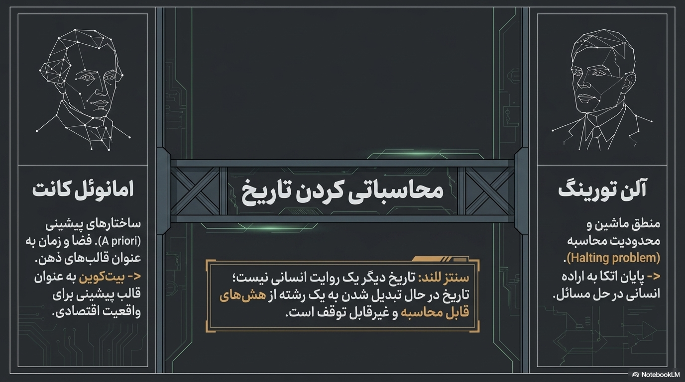
مارتین هایدگر — ۱۹۲۷ — خوانشی تحلیلی
«هستی و زمان» با این ادعا آغاز میشود که فلسفهٔ غرب، پرسش از معنای هستی را فراموش کرده و آن را با هستندهها (اشیا و موجودات) خلط کرده است. هایدگر برای بازگرداندن این پرسش، از تحلیل دازاین آغاز میکند — همان هستندهٔ انسانی که بهواسطهٔ در-جهان-بودنش، همواره در نسبتی عملی و پیشاتفکری با جهان و ابزارهای پیرامونش قرار دارد؛ پیش از آنکه دربارهٔ اشیا نظریهپردازی کنیم، از پیش با آنها در حال کار و زندگی هستیم.
بنیاد این هستی، به باور هایدگر، نه فضا بلکه زمانمندی است: دازاین همواره از آینده بهسوی خود میآید (در پیشبینی و امکانهای پیش رو)، در حالی که گذشته را با خود حمل میکند (بهعنوان آنچه از پیش بوده)، و در حالِ حاضر به تصمیم و کنش میرسد. زمان، در این تصویر، هرگز رشتهای از لحظات یکسان و بیتفاوت نیست، بلکه ساختاری است که همواره با دلمشغولی، ترس از مرگ، و امکانهای آینده گره خورده است.
نیک لند این ساختار سهوجهی زمانمندی را دقیقاً در برابر زمان بلوک میگذارد و از این مقایسه، یکی از تندترین گزارههای سمینار خود را بیرون میکشد. زمان انسانی هایدگری، پیوسته و اندیشناک از مرگ و آینده است؛ زمان بلاکچین اما گسسته، بیغرض و کاملاً بیاعتنا به مرگ یا معنا است — هر بلوک صرفاً رخ میدهد، بیآنکه دازاینی برای دلمشغولی به آن وجود داشته باشد. به گفتهٔ لند، دقیقاً همین بیاعتنایی است که زمان محاسباتی را از سنت پدیدارشناسانه جدا میکند: در آن، «بودن» دیگر به معنای دغدغهداشتن نیست، بلکه به معنای صرفاً ثبتشدن در زنجیره است — نوعی هستیشناسی بدون دازاین.
اگر هایدگر نشان داد که هستی انسانی از زمانمندیِ دلمشغول ساخته شده، پرسش بعدی این است: میل و انرژیای که این دلمشغولی را به حرکت درمیآورد، از کجا میآید و به کجا میرود؟ برای پاسخ به این پرسش، لند به سراغ دو فیلسوف فرانسوی میرود که، برخلاف هایدگر، میل را نه یک کمبود اگزیستانسیل، بلکه یک نیروی مولد و بیمرکز میدانند: ژیل دلوز و فلیکس گتاری.
برای مطالعهٔ بیشتر: Stanford Encyclopedia of Philosophy — Heidegger
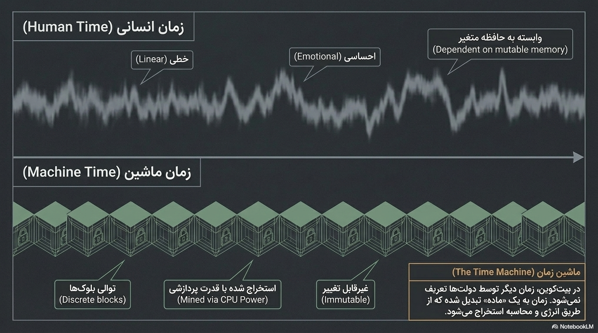
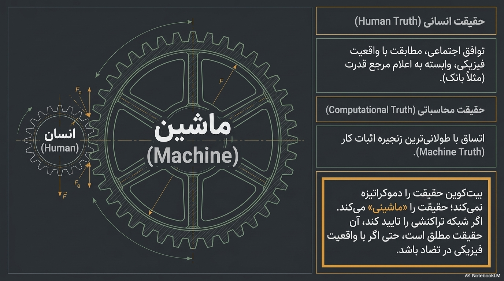
ژیل دلوز و فلیکس گتاری — ۱۹۷۲ — خوانشی تحلیلی
دلوز و گتاری در «آنتیاویدیپ» میل را نه بهمثابه کمبودی که باید سرکوب یا اقناع شود، بلکه بهمثابه نیرویی تولیدکننده میفهمند: ماشینهای میل که بهطور مستمر جریان تولید میکنند و به یکدیگر متصل میشوند، بیآنکه نیازمند یک مرکز سازماندهنده باشند. این تصویر، وارونهٔ کامل روایت روانکاوانهای است که میل را حول یک کمبود اولیه (مثلث اویدیپی) سازمان میدهد.
سرمایهداری، در این خوانش، نه صرفاً یک نظام اقتصادی، بلکه دستگاهی است که این جریانها را از کدهای سنتی (خویشاوندی، دین، دولت) میگسلد و آزاد میکند — فرایندی که آنان آن را ناحوطهزایی مینامند. اما همان سرمایهداری، بهمحض گسستن این کدها، بلافاصله جریان آزادشده را با کدهای تازه (بازار، بانک، دولت) از نو میبندد؛ نوسانی دائمی میان رهاسازی و بازکدگذاری که به گفتهٔ آنان، منطق درونی و پارادوکسیکال خودِ سرمایهداری مدرن است.
نیک لند بیتکوین را تحقق رادیکال همین ناحوطهزایی میبیند — و اینجاست که استدلال او از توصیف صرف، به یک ادعای فلسفیِ جسورانه تبدیل میشود: پولی که برای نخستینبار، از مرزهای ملی، بانک مرکزی و حتی از هرگونه کد دولتی گسسته و به «جریانی خالص» بدل میشود، بدون آنکه بلافاصله به کدگذاری تازهای سپرده شود. به باور لند، این همان لحظهای است که ماشینهای میل دلوزی-گتاری، سرانجام رسانهای مییابند که در آن بدون میانجی انسانی نیز میتوانند جریان یابند — نقطهای که به گفتهٔ او، سرمایه دیگر نیازی به بازکدگذاری انسانی ندارد و میتواند صرفاً در قالب محاسباتی خودش جریان یابد.
با این هشت متن پشت سر — سه سند فنی و پنج ستون فلسفی — اکنون همهٔ ابزار مفهومی لازم برای دنبالکردن استدلال خود نیک لند فراهم شده است. بخش سوم کتاب، که در ادامه میآید، دقیقاً همین ابزارها را در قالب هشت جلسهٔ سخنرانی او بهکار میگیرد تا نشان دهد چگونه بیتکوین، از یک سند نُهصفحهای، به رخدادی فلسفی برای بازتعریف زمان، حقیقت، مالکیت و حاکمیت بدل میشود.
برای مطالعهٔ بیشتر: Stanford Encyclopedia of Philosophy — Deleuze
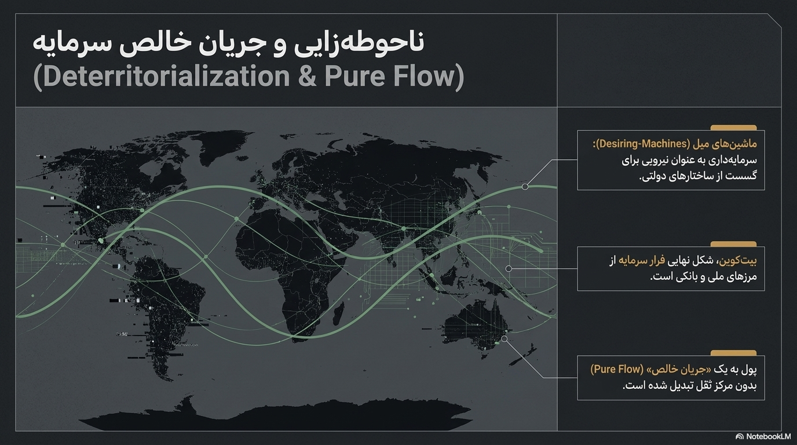
هشت جلسهٔ زیر، سمینار کامل نیک لند دربارهٔ بیتکوین و فلسفه است. هر ویدیو مستقیماً از آرشیو عمومی پخش میشود؛ زیر هر پخشکننده، تحلیلی از محور فکری همان جلسه و یک راهنمای زمانبندی سریع آمده است. ستارههای کنار هر ردیف، آن بخش از سخنرانی را به فصل مرتبط در همین کتاب پیوند میزنند.
لند جلسهٔ نخست را با کنارگذاشتن نگاه اقتصادی به بیتکوین آغاز میکند تا آن را بهمثابه یک رخداد فلسفی بررسی کند. او نشان میدهد چگونه هش، بهعنوان یک «راز آشکار»، شفافیت کامل تراکنشها را با ناشناسی کامل کاربران در یک ابزار واحد جمع میکند؛ تناقضی که به باور او، مفاهیم زمان، حقیقت، مالکیت و قدرت را همزمان بازتعریف میکند.
در این جلسه، لند نشان میدهد چگونه در نظام بیتکوین، مالکیت دیگر امتیازی نیست که از سوی یک مرجع حقوقی یا دولتی اعطا شود، بلکه صرفاً به «دارابودن یک کلید خصوصی» فروکاسته میشود. این جابهجایی، بهمرور، حاکمیت را نیز از دست نهادهای انسانی به پروتکل منتقل میکند.
لند در این جلسه به پارادوکس مرکزی معماری رمزنگارانهٔ بیتکوین میپردازد: دفتر کل کاملاً عمومی و شفاف است، اما هویت پشت هر کلید در تاریکی مطلق باقی میماند. حریم خصوصی دیگر به معنای «پنهانکردن اطلاعات» نیست، بلکه به معنای «در اختیار داشتن یک کلید» است.
در نظام بیتکوین، قدرت دیگر از بالا به پایین اعمال نمیشود، بلکه بهطور افقی میان گرههایی توزیع میشود که هرکدام تنها به میزان قدرت پردازشی خود نفوذ دارند. لند این وضعیت را جوانهای میداند برای آنچه «تکینگی مصنوعی» مینامد.
لند در این جلسه، بحث زمانمندی هایدگری را بهسوی هستیشناسی دیجیتال میکشاند: زمان محاسباتی دیگر جریانی پیوسته نیست، بلکه یک متغیر گسسته و شمارا — تعداد بلوکها — است، و «بودن» برای یک تراکنش به معنای «ثبتشدن در زنجیره» است.
لند بیتکوین را زیرساختی میبیند که برای ماشینهای آینده آماده میشود؛ انسانها در این روایت صرفاً کاتالیزورهایی هستند که سیستم را بهراه میاندازند، بیآنکه کنترلی بر مسیر نهایی آن داشته باشند.
لند در این جلسه تمایز مرکزی خود میان قانون و پروتکل را صورتبندی میکند: قانون همواره مبهم است و نیازمند تفسیر، متکی بر زور و دارای استثناست؛ پروتکل اما مطلق، ریاضی و بدون هیچ استثنایی اجرا میشود.
در جلسهٔ پایانی، لند تمام رشتههای سمینار را در تصویر «لویاتان دیجیتال» گره میزند: اگر لویاتان هابزی از ترس مجازات مشروعیت میگرفت، لویاتان محاسباتی، اجبار را مستقیماً در کد جای میدهد. به باور لند، این خروج از عصر انسانی مدیریت ارزش و ورود به دوران سرمایهداری محاسباتی است.
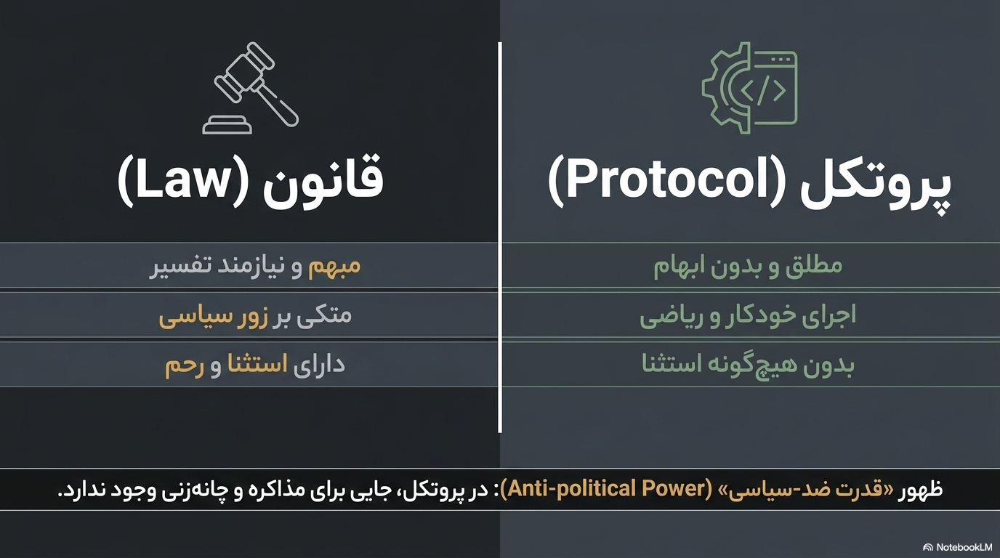
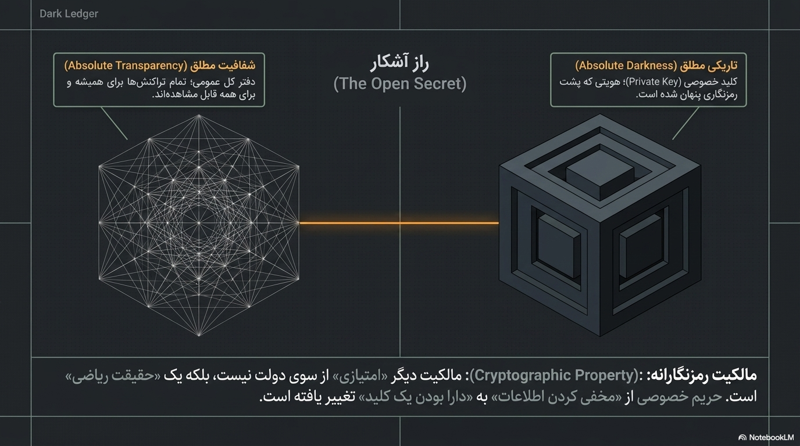
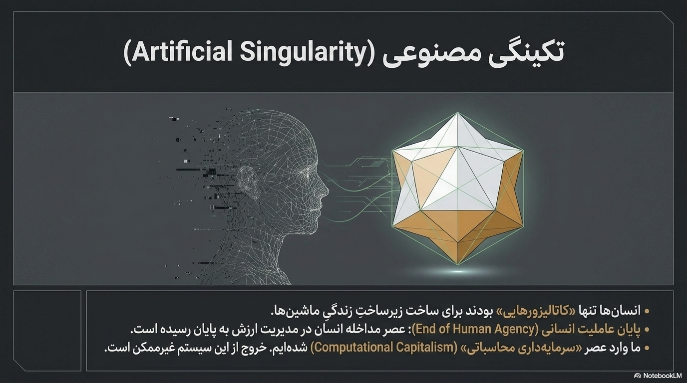
برای شنیدن نسخهٔ فشرده و روایی این مسیر فکری — از سند ناکاموتو تا افقهای نهایی لند — پادکست زیر را گوش کنید.